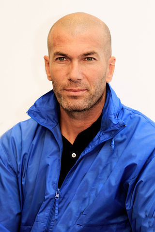

| Zidane | |||||||||
|  | |||||||||
| Nombre completo | Nizedine Yazid Zidane | ||||||||
| Nacimiento y Edad | 23 de Junio de 1972, 51 años | ||||||||
| Altura | 1,85m | ||||||||
| Posición | Centrocampista | ||||||||
| Seleción Nacional | Francia | ||||||||
| Trayectoria | |||||||||
| A.S Cannes (1989-92) | |||||||||
| F.C Girondins de Burdeos (1992-96) | |||||||||
| Juventus (1996-01) | |||||||||
| Real Madrid (2001-06) | |||||||||